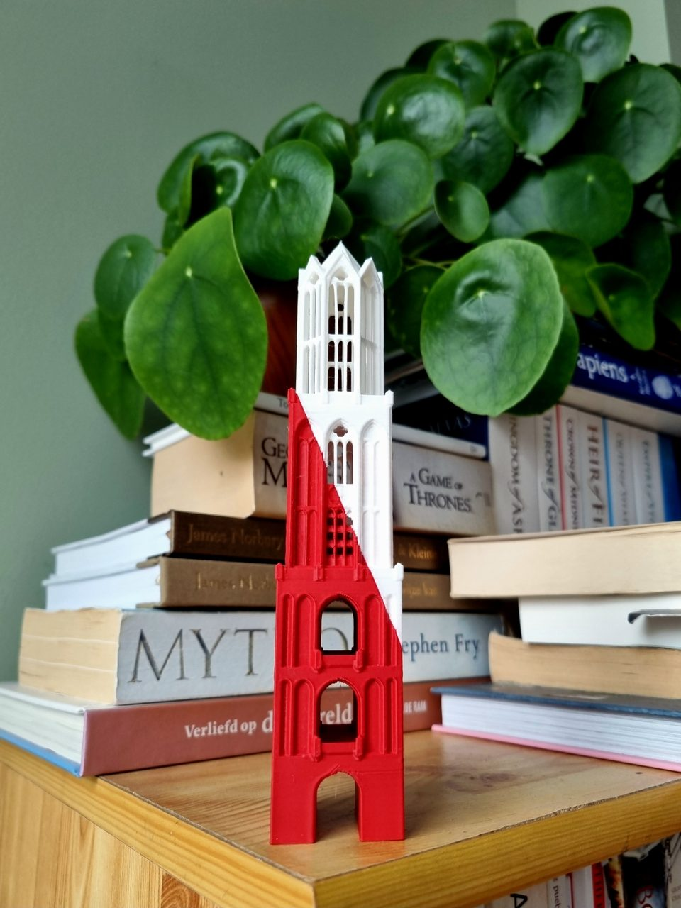

Classic
Kies jouw kleur
Een kleur die bij jouw huis past.
- Groen
- Terracotta
- Zandkleur
- Lila
De Domtoren op je kast, op de vensterbank of als cadeau. Ontworpen en gemaakt in Utrecht.

Ik ben Johan. Sinds mijn 12e kom ik in Utrecht en sinds mijn 18e woon ik hier. Ik heb hier gestudeerd, inmiddels heb ik een huis gekocht en ik ga hier niet meer weg.
Voor mij is de Dom het punt waarop ik weet dat ik thuis ben. Dat gevoel wilde ik op een plank kunnen zetten. Dus ontwierp ik de Domtoren als miniatuur.
De hoogste kerktoren van Nederland.
Treden naar het platform bovenin.
In een storm stortte het kerkschip in. Het werd nooit herbouwd, daarom staat de toren los.
Voor jezelf, of als cadeau bij een nieuw huis, diploma of afscheid.
Kies jouw DomtorenDe Domtoren
Een miniatuur van 22 cm. Hetzelfde ontwerp, andere kleuren.
Classic
Een kleur die bij jouw huis past.
Premium Utrecht Edition
Rood en wit lopen schuin door dezelfde toren. Er is dus geen aparte rode of witte versie.
Andere maat of kleur? Mail me gerust, dat kan op verzoek. Standaard is 22 cm.
Voor bedrijven
Een Domtoren voor klanten, personeel of een jubileum, in jullie kleuren en maat. Mail me wat je voor ogen hebt en ik stuur een voorstel.
De maker
Ik ontwerp, print en controleer elke Domtoren zelf, in Utrecht en in kleine aantallen.
Daarna pak ik de toren in en stuur ik die zelf op.
Johan RoosStudio Rossa, Utrecht
Ik antwoord zelf.
Studio Rossa MCP is een intern hulpmiddel van Studio Rossa. Het koppelt de eigen Google Drive-map van Studio Rossa aan Claude Code, zodat bedrijfsdocumenten, planningen en overzichten automatisch kunnen worden bijgewerkt. Het hulpmiddel wordt alleen door Studio Rossa zelf gebruikt en heeft geen toegang tot gegevens van andere Google-gebruikers. Meer hierover staat in de privacyverklaring.